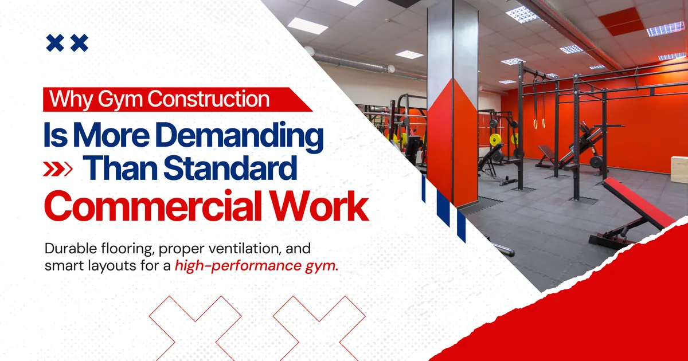
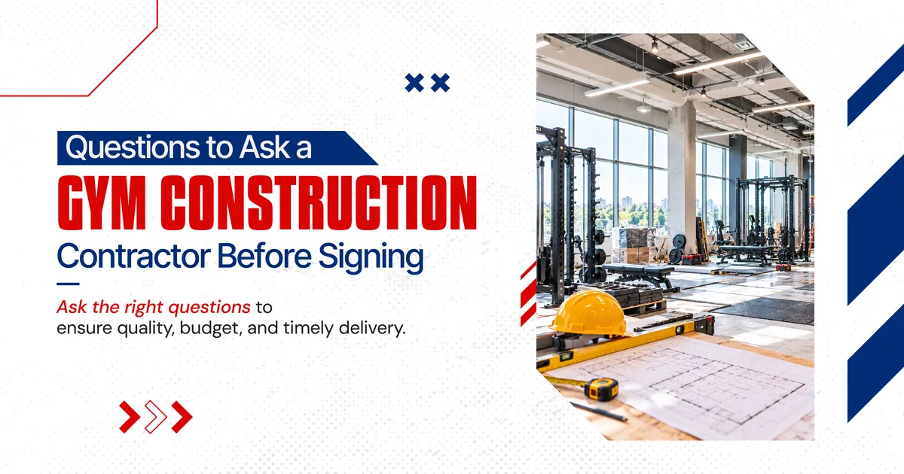
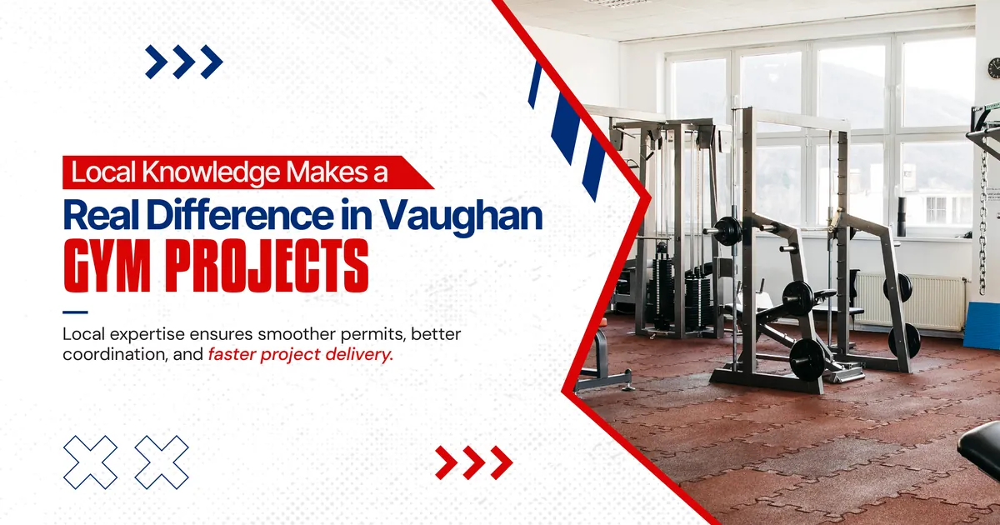
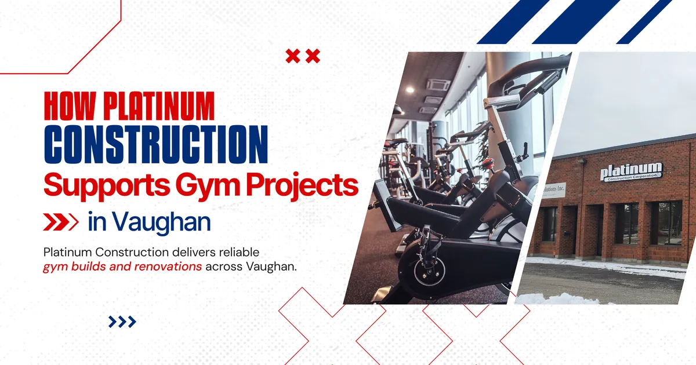

Getting all of that right requires more than a willing contractor. It requires a gym construction contractor in Vaughan who has built these kinds of spaces before and understands what a working fitness facility actually demands from day one.
This guide helps gym owners and fitness entrepreneurs in Vaughan ask the right questions, evaluate their options clearly, and make a confident contractor decision before any work begins.

Why Gym Construction Is More Demanding Than Standard Commercial Work
A lot of business owners assume a gym build out is similar to any other retail or commercial renovation. The bones are the same but the demands are considerably higher.
Rubber flooring for free weight areas needs to be installed over a subfloor system that can handle repeated heavy impact without cracking or shifting over time. Electrical systems need to distribute power across treadmills, ellipticals, cable machines, sound systems, lighting, and reception equipment simultaneously. Plumbing for change rooms, showers, and sanitation stations needs to be planned early because it drives where walls go and how traffic flows through the facility.
Ventilation is one of the most underestimated requirements in fitness centre construction. A commercial gym running at capacity generates significant heat and humidity. An HVAC system that is sized for a typical retail tenant will struggle in a fitness environment, leading to comfort complaints from members and expensive mechanical upgrades after opening.
A gym contractor in Vaughan with experience in fitness centre builds anticipates all of these requirements during the planning stage. One without that background tends to discover them during construction, which is a more expensive time to be learning.
The Layout Has to Work Before Anything Else
Gym design and construction in Vaughan starts with a layout conversation that most new gym owners underestimate. Equipment placement, traffic flow between zones, sight lines from the reception desk, emergency exit compliance, and change room access all need to be resolved before a single structural decision is made.
Changes to the layout become significantly more expensive once plumbing rough in and electrical distribution have been planned around an earlier version of the floor plan. Working with a gym construction company in Vaughan that pushes for layout finalization early in the process is a sign that they understand how gym builds actually work.
What Separates a Qualified Gym Contractor From a General Contractor
The difference between a qualified gym contractor and a general commercial contractor often does not show up in their marketing. Both will describe themselves as experienced. Both will provide estimates. The difference appears when the project gets into detail.
Here is what to look for when evaluating a gym contractor in Vaughan specifically.
Verified Fitness Centre Construction Experience
Ask directly whether the contractor has completed commercial gym construction or fitness centre renovation projects before. Ask for specific examples, addresses if possible, and references from gym owners who worked with them. Genuine experience in this space is specific and verifiable. Vague answers about similar commercial projects are usually a signal that gym specific experience is limited.
Flooring Knowledge That Goes Beyond the Surface
Flooring in a commercial gym is not a finishing decision. It is a structural and performance decision that affects equipment stability, member safety, acoustic performance, and long term maintenance costs. A qualified gym contractor understands the difference between rubber tile systems for weightlifting areas, sprung floors for group fitness studios, and sealed concrete for cycling or functional training zones. They will ask about your programming before recommending anything.
Electrical Planning Built Around Equipment Load
A commercial gym renovation that does not account for the full electrical load of the planned equipment creates problems that show up the moment the facility opens. A reliable gym construction company in Vaughan will review your equipment list and program schedule before finalizing the electrical design, not after the rough in is already done.
HVAC Sizing for Fitness Environments
Standard commercial HVAC calculations do not apply to a gym. The occupancy density, the heat output of cardio equipment, and the physical activity level of members all push mechanical requirements significantly higher than a typical retail or office space. A fitness centre contractor in Vaughan who understands this will specify mechanical systems sized for actual gym conditions, not default commercial assumptions.
Permit Management as Part of the Scope
Gym build outs in Vaughan require permits covering structural, electrical, plumbing, and mechanical work. A contractor who manages this process as part of their service saves you significant time and prevents the confusion of navigating the City of Vaughan building department independently.
Here is a straightforward comparison table for evaluating gym contractors side by side.
| Evaluation Area | Strong Signal | Weak Signal |
|---|---|---|
| Fitness centre experience | Specific completed gym projects with references | General commercial background with no gym history |
| Flooring knowledge | Understands zone specific flooring requirements | Treats flooring as a single material decision |
| Electrical planning | Reviews equipment list before finalizing design | Applies standard commercial electrical assumptions |
| HVAC sizing | Specifies for fitness occupancy loads | Uses standard commercial calculations |
| Permit management | Included as part of the service | Left to the client to arrange |
| Estimate quality | Detailed, itemized written breakdown | Vague total with minimal explanation |

Questions to Ask a Gym Construction Contractor Before Signing
These questions are worth asking every contractor you are seriously considering. The quality of the answers tells you a great deal about the quality of the work that will follow.
- Have you completed a commercial gym construction or fitness centre build in Vaughan or York Region before
- Can I speak with a past gym owner client about their experience working with you
- How do you approach electrical planning when a client has not yet finalized their equipment list
- How do you size HVAC for a fitness centre environment
- What does your estimate include and what is specifically excluded
- Who will manage my project on a daily basis during construction
- How do you handle unexpected structural or infrastructure discoveries during the gym renovation
- How long do permits typically take for a gym fit out in Vaughan

Local Knowledge Makes a Real Difference in Vaughan Gym Projects
Working with a gym renovation contractor who already knows the Vaughan construction environment offers practical advantages that are easy to underestimate until you are in the middle of a project.
The City of Vaughan has specific permit processing timelines, documentation requirements, and inspection procedures that affect how quickly a commercial gym construction project can move. A contractor who regularly works in Vaughan already understands these processes. They know what the building department asks for, how long approvals realistically take, and how to avoid the common reasons that permit applications get delayed.
The same advantage applies to subcontractor relationships. A gym contractor in Vaughan with established connections to local electricians, mechanical contractors, and flooring specialists can coordinate more reliably and often more cost effectively than one building a new subcontractor team from scratch for your project.
Gym construction in Vaughan also benefits from a contractor who understands the local commercial landscape. Whether your facility is going into a plaza along Highway 400, a newer development in Vaughan's growing northern communities, or a standalone building near the Vaughan Metropolitan Centre, the site conditions, access requirements, and neighbouring tenant considerations all affect how the project needs to be managed.
What a Typical Gym Build Out Timeline Looks Like in Vaughan
Understanding the general timeline helps gym owners plan their pre opening marketing, staffing, and membership campaigns around a realistic opening date rather than an optimistic one.
| Stage | Typical Duration |
|---|---|
| Layout finalization and design | 3 to 5 weeks |
| Detailed estimating and contract | 1 to 2 weeks |
| Permit application and approval | 4 to 8 weeks |
| Demolition and site preparation | 1 to 2 weeks |
| Structural, plumbing and electrical rough in | 3 to 4 weeks |
| Mechanical and HVAC installation | 2 to 3 weeks |
| Drywall, ceiling, and wall finishes | 2 to 3 weeks |
| Flooring installation by zone | 2 to 3 weeks |
| Equipment areas, fixtures and final finishes | 2 to 3 weeks |
| Inspections and occupancy sign off | 1 to 2 weeks |
Most commercial gym construction projects in Vaughan run between five and eight months from the start of planning to opening day. Smaller gym fit outs with simpler scope can move faster. Larger fitness centre builds with multiple zones, change room facilities, and complex mechanical requirements take longer.

How Platinum Construction Supports Gym Projects in Vaughan
At Platinum Construction, we understand that building a gym is not the same as building a standard commercial tenant space. The structural demands, the mechanical requirements, and the operational details of a fitness facility are specific, and they need a contractor who takes that specificity seriously.
We have completed commercial gym construction and fitness centre renovation projects across Vaughan and York Region. We start every project with a thorough site assessment and a layout conversation that locks in the key decisions before any rough in work begins. Our detailed, itemized estimates cover every major cost category so gym owners can plan their business finances around accurate numbers rather than hopeful ones.
We manage the City of Vaughan permit process as part of our service, assign a dedicated project manager to every build, and communicate with clients consistently throughout construction. When something unexpected comes up during a gym renovation, we discuss it with the client immediately and present options before proceeding. No surprises after the fact.
Our teams work across Vaughan, Woodbridge, Maple, Concord, Kleinburg, and the broader York Region. We understand the local commercial landscape, the permit timelines, and the subcontractor relationships that keep fitness centre construction projects moving on schedule in this area.
If you are planning a gym build out, a fitness centre renovation, or a new commercial gym construction project in Vaughan, we are ready to start the conversation.
Frequently Asked Questions
What makes a contractor qualified for gym construction in Vaughan
Verified experience completing commercial gym or fitness centre projects, knowledge of zone specific flooring requirements, and familiarity with the City of Vaughan permit process are the clearest qualifications.
How long does a gym build out take in Vaughan
Most commercial gym projects run between five and eight months from the start of planning to opening day, including permit processing time.
Do I need permits for a gym renovation in Vaughan
Yes. Gym renovations involving structural, electrical, plumbing, or mechanical changes require building permits through the City of Vaughan. A qualified contractor manages this process as part of the project.
What is the most expensive part of a gym build out
Mechanical and electrical systems tend to drive the highest costs in a commercial gym, particularly when HVAC needs to be sized for fitness occupancy rather than standard commercial use.
How do I verify a gym contractor's fitness centre experience
Ask for specific completed projects, request to speak with past gym owner clients, and ask detailed questions about how they approach flooring selection, electrical planning, and HVAC sizing for fitness environments.
Should I finalize my equipment list before construction begins
Yes. Equipment selection directly affects electrical circuit planning and floor zone specifications. Finalizing your equipment list before rough in work begins prevents costly changes later.
Why should I hire a local gym contractor in Vaughan rather than a general commercial builder
A local gym contractor in Vaughan understands the City of Vaughan permit process, has established subcontractor relationships, and has direct experience with the commercial gym construction requirements specific to this area.
Final Overview on Building a Commercial Gym in Vaughan
A well built gym in Vaughan does not just look good on opening day. It functions well under the daily demands of commercial fitness use, holds up to the physical intensity of its members, and operates without the mechanical or structural problems that come from a build that did not account for what a gym actually requires.
Choosing the right gym construction contractor in Vaughan is the decision that determines whether your facility delivers on that standard. Take the time to verify experience, ask the hard questions, and review estimates carefully before committing.
When you are ready to talk through your gym project with a contractor who knows Vaughan and understands commercial fitness centre construction from the inside, Platinum Construction is ready for that conversation. Visit platinumconstruction.com to book your free consultation.